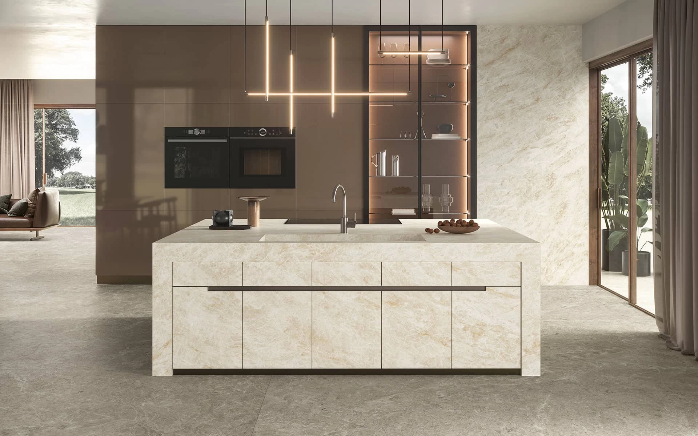
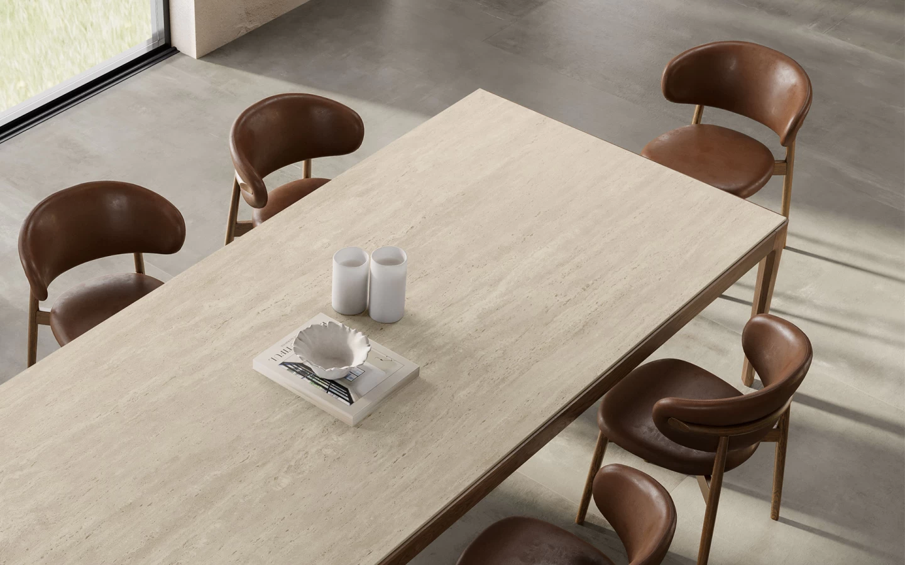
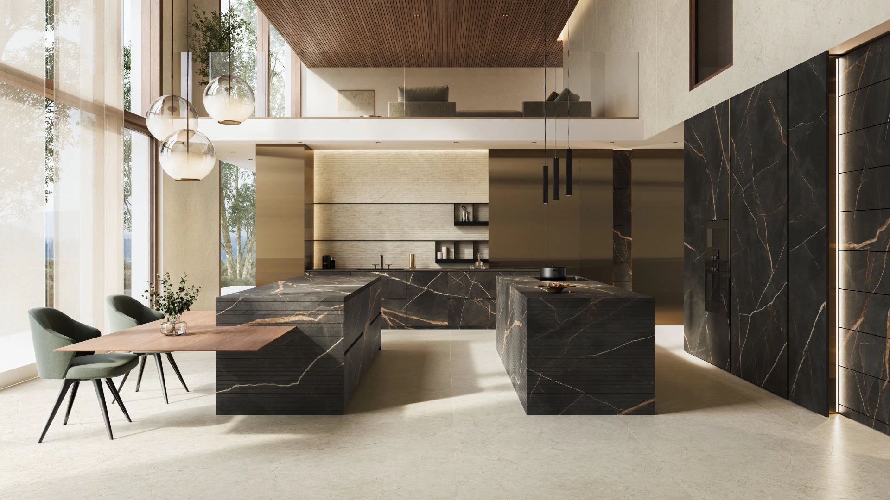
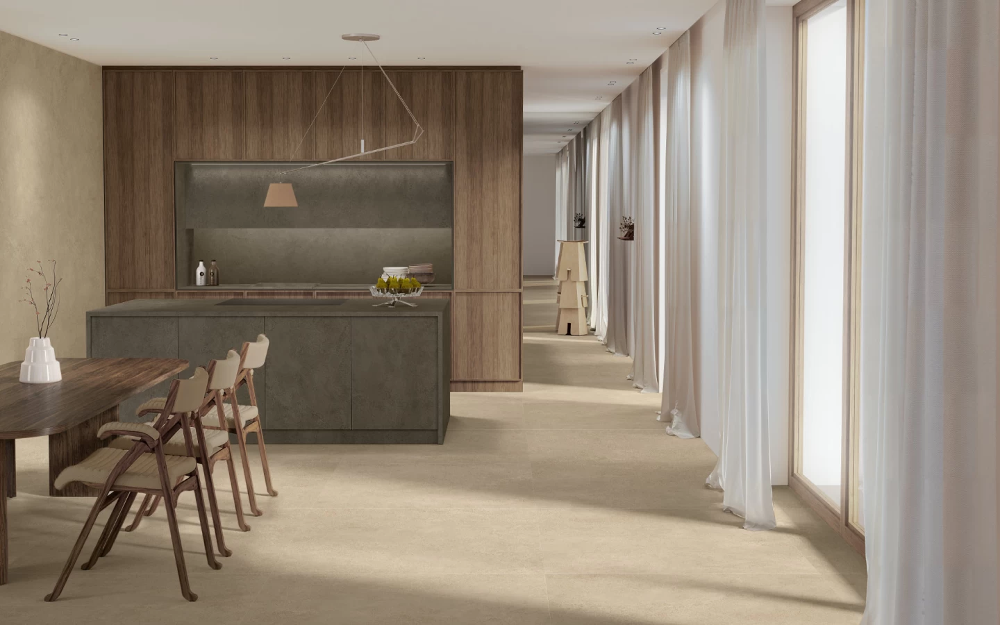
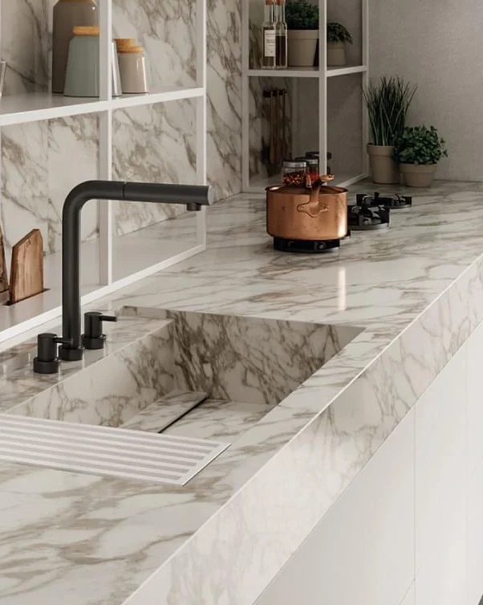
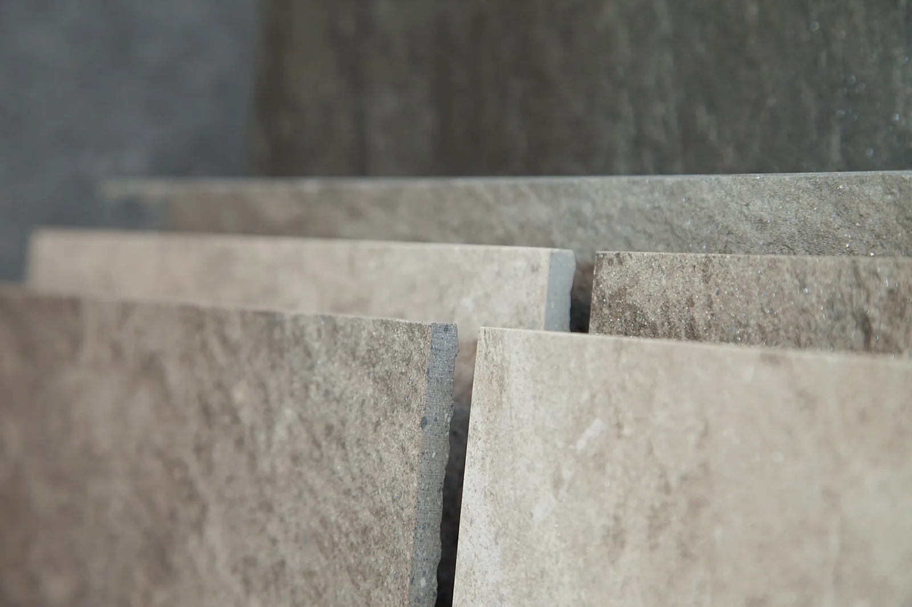
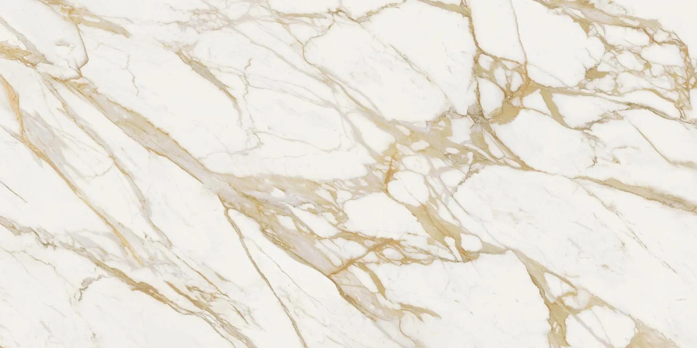
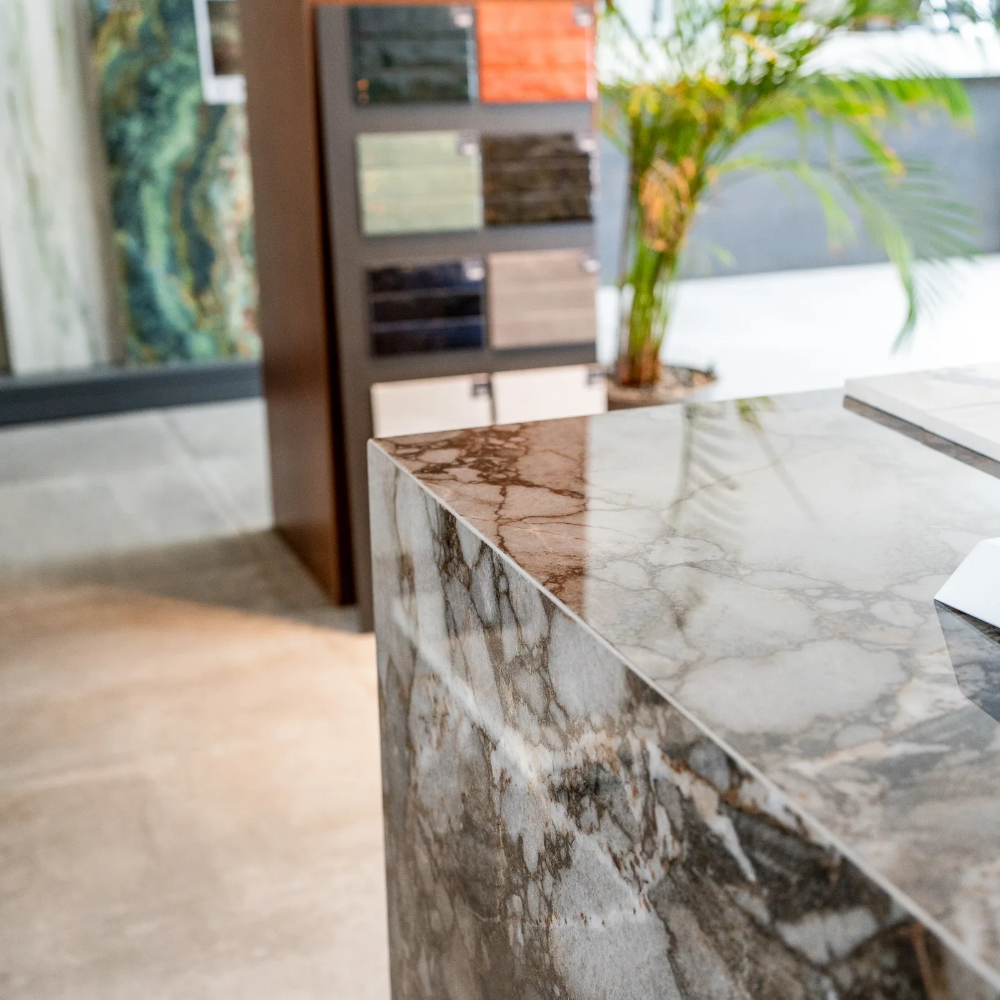
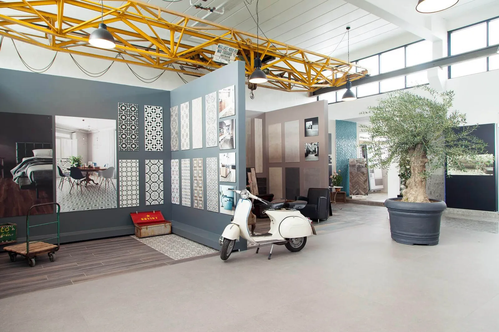

- “Super sted! … Klar anbefaling herfra.”Niclas
- “Super og fremragende flise butik. Bedste service jeg har fået.”Nabil
- “Virkelig god betjening og et stort udvalg af flotte fliser.”Lykke
- “God rådgivning, flink personale, og levering til tid.”Phil
- “Rigtig god vejledning og stort udvalg af flotte fliser.”Andre
- “Flinke mennesker der giver en super service omkring deres flotte produkter.”Bjørn
- “God service og meget lækre klinker og fliser.”Tina
- “Fantastisk god service! Fandt de lækreste fliser :)”Emil
- “Stort udvalg og super service.”Heine
Lavet på mål
Det laver vi
Køkkenbordplader
Skåret på mål i 12 mm keramik med look af marmor, sten, beton, træ eller metal.
Se bordplader
Køkkenvask
Edgeless-modellen beskytter bordpladen.
Se køkkenvaskeSpiseborde
Bordplade i keramik efter dine mål.
Se spiseborde
Fliser
Et kort udvalg fra vores italienske leverandører.
Se fliserEget skæreri
Én plade, skåret til dit køkken
Store keramiske plader kræver særligt udstyr at arbejde med, fordi materialet er ekstremt stærkt. Derfor gør vi det selv i vores eget skæreri.


Fra plade til færdig bordplade
- 01
Du vælger plade og look
I showroomet kan du se pladerne i fuld størrelse.
- 02
Vi måler op
Så bordpladen passer præcist til dit rum.
- 03
Vi skærer i eget skæreri
Store keramiske plader kræver særligt udstyr. Det har vi selv.
- 04
Vi monterer
Vi monterer bordpladen hos dig, og leveringstiden er kort.
Fliser fra Italien
Vælg dit look
Bordplader og fliser i italiensk keramik. Resten af udvalget kan du se i showroomet.
Udført af Banio
Referencer

Om Banio
Italiensk design siden 1989
Vi har en stor passion for italiensk design og har brugt mange år på at finde de rigtige leverandører i Italien. I dag arbejder vi med Atlas Plan, Florim, Fondovalle og Ceramica Sant'Agostino. Vi hjælper både private og erhverv.
Læs mere om BanioForespørgsel
Fortæl os om dit projekt
Send os dine mål og ønsker, så vender vi tilbage.
Eller ring på 36 30 43 62